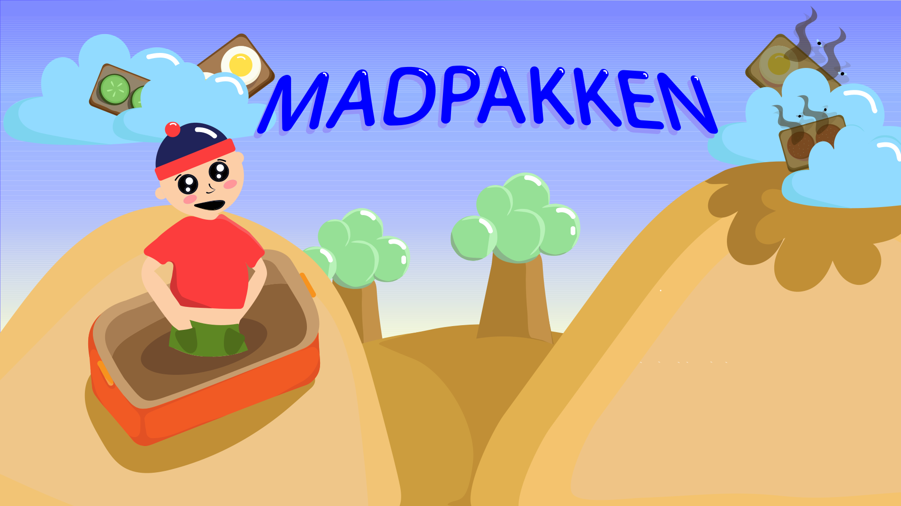
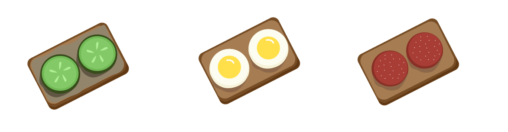

Madpakken er et spil hvor det handler om at fange de rådne rugbrødsmadder inden de lander i Ole´s madpakke. Prøv spillet her!
Spil nu
Assets
Her kan du se en oversigt over mine spilskærme, ui elementer og spilelementer.
